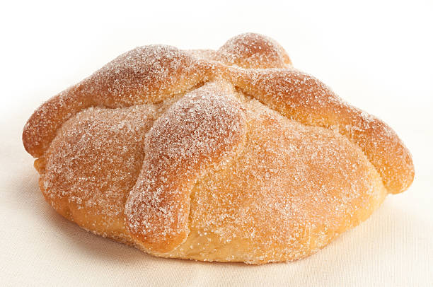

RECETA DE PAN DE MUERTO CON AZAHAR
El pan de muerto con azahar es una variante de la receta tradicional
típica de México para el Día de Muertos. Se prepara en forma circular
con un bollo en la parte superior y cuatro tiras dispuestas en forma
de cruz.
Ingredientes
- 17 g de levadura seca
- 5 cucharadas de agua tibia
- 5 y ½ tazas de harina
- 2 tazas de azúcar
- 1 lata de leche evaporada
- 2 huevos y 1 yema
- 1 cucharadita de esencia de azahar
- 180 g de mantequilla a temperatura ambiente
- 45 g de mantequilla fundida
Preparación
-
Precalentar el horno a 180 grados.
-
Mezclar la levadura con 1 cucharadita de azúcar y el agua tibia,
esperar hasta que doble su volumen.
-
Formar una fuente con la harina previamente tamizada y ¾ taza de
azúcar. Verter en el centro la levadura fermentada, la leche
evaporada, el huevo, la yema, la esencia de azahar y la mantequilla
a temperatura ambiente.
-
Mezclar todos los ingredientes hasta formar una pasta. Amasar y
golpear contra la mesa hasta que esté tersa, elástica y no se pegue
en los dedos.
-
Colocarla en un recipiente grande previamente engrasado, cubrir con papel
film y dejarla reposar en un lugar tibio hasta que doble su volumen.
-
Reservar una cuarta parte de la masa para formar los huesos. Dividir en
10 partes iguales y formar bolas, colocarlas en placas previamente
engrasadas y enharinadas. Cubrir con papel film y dejarlas reposar en un
lugar tibio hasta que doblen su volumen. Con la masa reservada formar 20
tiras para los huesitos y 10 bolitas pequeñas, colocar los huesitos y
las bolitas en una placa con papel manteca y enfriar en heladera.
-
Formar el pan de muerto colocando dos huesitos cruzados sobre los panes que
y en la parte superior colocar una bolita para simular el cráneo. Barnizar
con huevo y hornear a 180 °C de 20 a 30 minutos. Retirar del horno, barnizar
con la mantequilla fundida y espolvorear con azúcar.
